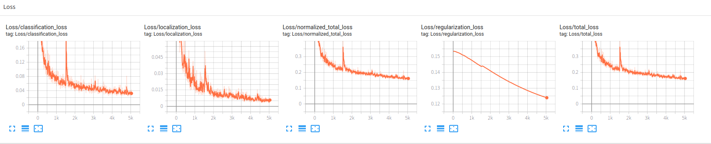
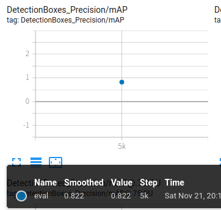
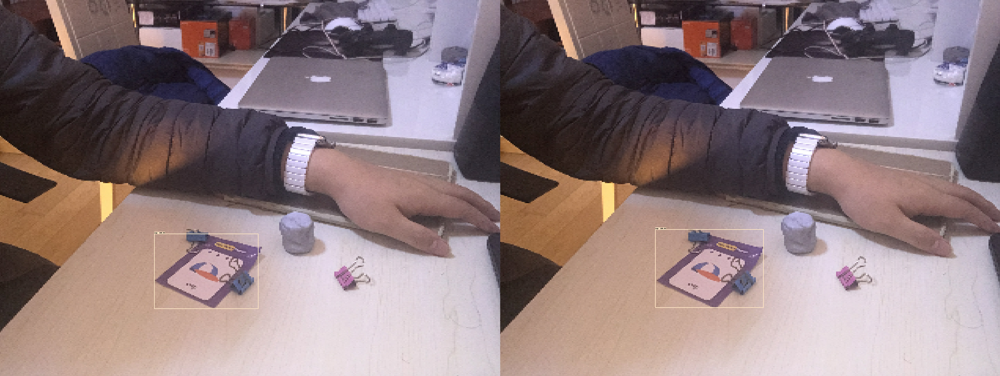
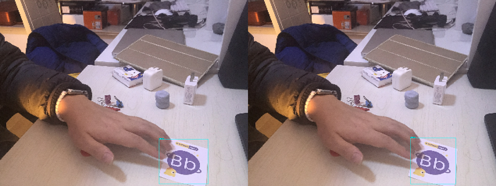

随着tf2的发布，object detection API也已经迁移到了tf2上，有朋友正好要开始学习应用目标检测，问我有没有tf2的教程，于是决定决定把原来tf1.15上的使用自定义数据集在本地显卡上测试的代码迁移到tf2上，并且使用Colaboratory来运行，免去了本地环境的搭建。
tensorflow 2.3
准备数据集
获取tf2的预训练模型TensorFlow 2 Model Zoo SSD MobileNet V2 FPNLite 320x320
关于tf和GPUprint(tf.__version__)查看当前版本，无需额外安装；修改->笔记本设置，选择硬件加速器GPU即可使用Colaboratory自带的GPU资源。
Colaboratory的GPU资源大概只能连续使用1个小时，然后会挂起，使用时注意，1个小时用来学习测试足以
1 2 3 4 5 6 7 8 9 import osimport pathlibif "models" in pathlib.Path.cwd().parts: while "models" in pathlib.Path.cwd().parts: os.chdir('..' ) elif not pathlib.Path('models' ).exists(): !git clone --depth 1 https://github.com/tensorflow/models
1 2 3 4 5 6 %%bash cd models/research/protoc object_detection/protos/*.proto --python_out=. cp object_detection/packages/tf2/setup.py . python -m pip install .
Object Detection API会安装在虚拟机的目录下，所以后面我们要把我们的资源（先存储到Google Drive里）都拷贝到虚拟机对应的目录下
1 2 3 4 5 6 7 8 9 10 11 12 13 14 15 %%bash ls mkdir models/research/abc mkdir models/research/abc/data cd drive/My\ Drive/Object\ Detection/my\ OD/ls cp -rf data/* /content/models/research/abc/data mkdir models/research/abc/models cd drive/My\ Drive/Object\ Detection/my\ OD/modelsls cp -rf * /content/models/research/abc/models
1 2 3 %%bash cd models/research/python object_detection/builders/model_builder_tf2_test.py
测试通过如下：
1 2 3 4 5 6 7 8 9 10 11 12 13 14 15 16 17 18 19 20 21 22 23 24 25 26 27 28 29 30 31 32 33 34 35 36 37 INFO:tensorflow:time(__main__.ModelBuilderTF2Test.test_create_ssd_models_from_config): 31.47s I1122 03:06:47.900097 140077263148928 test_util.py:1973] time(__main__.ModelBuilderTF2Test.test_create_ssd_models_from_config): 31.47s [ OK ] ModelBuilderTF2Test.test_create_ssd_models_from_config [ RUN ] ModelBuilderTF2Test.test_invalid_faster_rcnn_batchnorm_update INFO:tensorflow:time(__main__.ModelBuilderTF2Test.test_invalid_faster_rcnn_batchnorm_update): 0.0s I1122 03:06:47.908242 140077263148928 test_util.py:1973] time(__main__.ModelBuilderTF2Test.test_invalid_faster_rcnn_batchnorm_update): 0.0s [ OK ] ModelBuilderTF2Test.test_invalid_faster_rcnn_batchnorm_update [ RUN ] ModelBuilderTF2Test.test_invalid_first_stage_nms_iou_threshold INFO:tensorflow:time(__main__.ModelBuilderTF2Test.test_invalid_first_stage_nms_iou_threshold): 0.0s I1122 03:06:47.910503 140077263148928 test_util.py:1973] time(__main__.ModelBuilderTF2Test.test_invalid_first_stage_nms_iou_threshold): 0.0s [ OK ] ModelBuilderTF2Test.test_invalid_first_stage_nms_iou_threshold [ RUN ] ModelBuilderTF2Test.test_invalid_model_config_proto INFO:tensorflow:time(__main__.ModelBuilderTF2Test.test_invalid_model_config_proto): 0.0s I1122 03:06:47.911248 140077263148928 test_util.py:1973] time(__main__.ModelBuilderTF2Test.test_invalid_model_config_proto): 0.0s [ OK ] ModelBuilderTF2Test.test_invalid_model_config_proto [ RUN ] ModelBuilderTF2Test.test_invalid_second_stage_batch_size INFO:tensorflow:time(__main__.ModelBuilderTF2Test.test_invalid_second_stage_batch_size): 0.0s I1122 03:06:47.913010 140077263148928 test_util.py:1973] time(__main__.ModelBuilderTF2Test.test_invalid_second_stage_batch_size): 0.0s [ OK ] ModelBuilderTF2Test.test_invalid_second_stage_batch_size [ RUN ] ModelBuilderTF2Test.test_session [ SKIPPED ] ModelBuilderTF2Test.test_session [ RUN ] ModelBuilderTF2Test.test_unknown_faster_rcnn_feature_extractor INFO:tensorflow:time(__main__.ModelBuilderTF2Test.test_unknown_faster_rcnn_feature_extractor): 0.0s I1122 03:06:47.914866 140077263148928 test_util.py:1973] time(__main__.ModelBuilderTF2Test.test_unknown_faster_rcnn_feature_extractor): 0.0s [ OK ] ModelBuilderTF2Test.test_unknown_faster_rcnn_feature_extractor [ RUN ] ModelBuilderTF2Test.test_unknown_meta_architecture INFO:tensorflow:time(__main__.ModelBuilderTF2Test.test_unknown_meta_architecture): 0.0s I1122 03:06:47.915547 140077263148928 test_util.py:1973] time(__main__.ModelBuilderTF2Test.test_unknown_meta_architecture): 0.0s [ OK ] ModelBuilderTF2Test.test_unknown_meta_architecture [ RUN ] ModelBuilderTF2Test.test_unknown_ssd_feature_extractor INFO:tensorflow:time(__main__.ModelBuilderTF2Test.test_unknown_ssd_feature_extractor): 0.0s I1122 03:06:47.916894 140077263148928 test_util.py:1973] time(__main__.ModelBuilderTF2Test.test_unknown_ssd_feature_extractor): 0.0s [ OK ] ModelBuilderTF2Test.test_unknown_ssd_feature_extractor ---------------------------------------------------------------------- Ran 20 tests in 42.757s OK (skipped=1)
Pipeline是tf使用的一种配置文件，用于配置训练过程，在我们下载的SSD MobileNet V2 FPNLite 320x320文件夹中自带了一个，但直接使用会有问题，这里改写后内容如下：
1 2 3 4 5 6 7 8 9 10 11 12 13 14 15 16 17 18 19 20 21 22 23 24 25 26 27 28 29 30 31 32 33 34 35 36 37 38 39 40 41 42 43 44 45 46 47 48 49 50 51 52 53 54 55 56 57 58 59 60 61 62 63 64 65 66 67 68 69 70 71 72 73 74 75 76 77 78 79 80 81 82 83 84 85 86 87 88 89 90 91 92 93 94 95 96 97 98 99 100 101 102 103 104 105 106 107 108 109 110 111 112 113 114 115 116 117 118 119 120 121 122 123 124 125 126 127 128 129 130 131 132 133 134 135 136 137 138 139 140 141 142 143 144 145 146 147 148 149 150 151 152 153 154 155 156 157 158 159 160 161 162 163 164 165 166 167 168 169 170 171 172 173 174 175 176 177 178 179 180 181 182 183 184 185 186 187 188 189 190 191 192 193 194 195 196 197 198 199 200 # SSD with Mobilenet v2 FPN-lite (go/fpn-lite) feature extractor, shared box # predictor and focal loss (a mobile version of Retinanet). # Retinanet: see Lin et al, https://arxiv.org/abs/1708.02002 # Trained on COCO, initialized from Imagenet classification checkpoint # Train on TPU-8 # # Achieves 22.2 mAP on COCO17 Val model { ssd { inplace_batchnorm_update: true freeze_batchnorm: false num_classes: 6 box_coder { faster_rcnn_box_coder { y_scale: 10.0 x_scale: 10.0 height_scale: 5.0 width_scale: 5.0 } } matcher { argmax_matcher { matched_threshold: 0.5 unmatched_threshold: 0.5 ignore_thresholds: false negatives_lower_than_unmatched: true force_match_for_each_row: true use_matmul_gather: true } } similarity_calculator { iou_similarity { } } encode_background_as_zeros: true anchor_generator { multiscale_anchor_generator { min_level: 3 max_level: 7 anchor_scale: 4.0 aspect_ratios: [1.0, 2.0, 0.5] scales_per_octave: 2 } } image_resizer { fixed_shape_resizer { height: 320 width: 320 } } box_predictor { weight_shared_convolutional_box_predictor { depth: 128 class_prediction_bias_init: -4.6 conv_hyperparams { activation: RELU_6, regularizer { l2_regularizer { weight: 0.00004 } } initializer { random_normal_initializer { stddev: 0.01 mean: 0.0 } } batch_norm { scale: true, decay: 0.997, epsilon: 0.001, } } num_layers_before_predictor: 4 share_prediction_tower: true use_depthwise: true kernel_size: 3 } } feature_extractor { type: 'ssd_mobilenet_v2_fpn_keras' use_depthwise: true fpn { min_level: 3 max_level: 7 additional_layer_depth: 128 } min_depth: 16 depth_multiplier: 1.0 conv_hyperparams { activation: RELU_6, regularizer { l2_regularizer { weight: 0.00004 } } initializer { random_normal_initializer { stddev: 0.01 mean: 0.0 } } batch_norm { scale: true, decay: 0.997, epsilon: 0.001, } } override_base_feature_extractor_hyperparams: true } loss { classification_loss { weighted_sigmoid_focal { alpha: 0.25 gamma: 2.0 } } localization_loss { weighted_smooth_l1 { } } classification_weight: 1.0 localization_weight: 1.0 } normalize_loss_by_num_matches: true normalize_loc_loss_by_codesize: true post_processing { batch_non_max_suppression { score_threshold: 1e-8 iou_threshold: 0.6 max_detections_per_class: 100 max_total_detections: 100 } score_converter: SIGMOID } } } train_config: { fine_tune_checkpoint_version: V2 fine_tune_checkpoint: "/content/models/research/abc/models/ssd_mobilenet_v2_fpnlite_320x320_coco17_tpu-8/cp/ckpt-0" fine_tune_checkpoint_type: "detection" batch_size: 16 sync_replicas: true startup_delay_steps: 0 replicas_to_aggregate: 8 num_steps: 10000 data_augmentation_options { random_horizontal_flip { } } data_augmentation_options { random_crop_image { min_object_covered: 0.0 min_aspect_ratio: 0.75 max_aspect_ratio: 3.0 min_area: 0.75 max_area: 1.0 overlap_thresh: 0.0 } } optimizer { momentum_optimizer: { learning_rate: { cosine_decay_learning_rate { learning_rate_base: .08 total_steps: 10000 warmup_learning_rate: .026666 warmup_steps: 100 } } momentum_optimizer_value: 0.9 } use_moving_average: false } max_number_of_boxes: 100 unpad_groundtruth_tensors: false } train_input_reader: { label_map_path: "/content/models/research/abc/data/abc_label_map.pbtxt" tf_record_input_reader { input_path: "/content/models/research/abc/data/abc_train*" } } eval_config: { metrics_set: "coco_detection_metrics" use_moving_averages: false } eval_input_reader: { label_map_path: "/content/models/research/abc/data/abc_label_map.pbtxt" shuffle: false num_epochs: 1 tf_record_input_reader { input_path: "/content/models/research/abc/data/abc_val.record*" } }
有一个重要改动是fine_tune_checkpoint_type需要设置成detection。
1 2 %reload_ext tensorboard %tensorboard --logdir /content/models/research/abc/models/ssd_mobilenet_v2_fpnlite_320x320_coco17_tpu-8/
注意一定要先执行tensorboard命令，命令执行后是非持续性的，tensorboard启动后就会一直存在，并且不会占用Colaboratory，这时候可以再去启动训练程序，这样训练过程中写的日志可以被tensorboard不断读取。
1 2 3 4 5 6 7 8 %%bash cd models/research/pwd python object_detection/model_main_tf2.py \ --pipeline_config_path=/content/models/research/abc/models/ssd_mobilenet_v2_fpnlite_320x320_coco17_tpu-8/pipeline.config \ --model_dir=/content/models/research/abc/models/ssd_mobilenet_v2_fpnlite_320x320_coco17_tpu-8/ \ --alsologtostderr
与tf1.15相比执行文件换成了model_main_tf2.py，其他设置都一样。
但是由于迁移只做了一些主要功能的tf2适配，与tf1.15相比，不能设置每隔多少train做一次eval，导致只能训练完成后执行一次eval，不能直观看到eval的变化。


最后抽查eval过程中的图片结果，左侧为训练图片，右侧为检测结果


效果OK